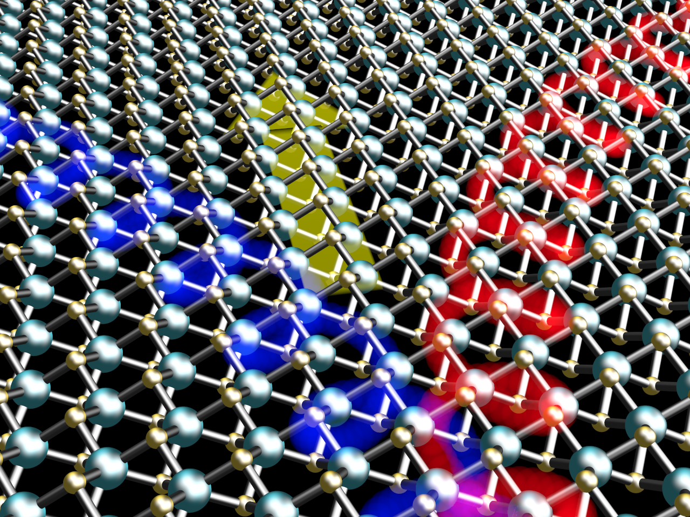

Orbitronics
Conventional electronics uses electric charge to process and store information. Spintronics extends this approach by also making use of the electron spin. A central challenge in spintronics is the conversion between charge and spin currents, which is commonly achieved through spin–orbit coupling. Efficient conversion often relies on materials containing heavy elements, such as platinum, gold, or tungsten. These materials can be costly and scarce, and their extraction carries an environmental burden.
Orbitronics explores a different degree of freedom: the orbital angular momentum of electrons and its associated magnetic moment. Orbital currents can be generated even in materials with relatively weak spin–orbit coupling, considerably expanding the range of systems available for transporting and controlling electronic angular momentum. This makes orbitronics an interesting platform for investigating alternative approaches to information processing.
Our goal is to build on concepts and methods developed in spintronics while focusing on the coupled transport of charge and orbital angular momentum. We are particularly interested in two-dimensional materials, where orbital transport remains comparatively unexplored. Our work addresses practical questions such as how orbital currents are generated, how far they propagate, how they relax, and how they can be detected.
This research has two closely connected directions. The first concerns orbital transport in two-dimensional materials. We investigate the conditions required to generate robust orbital currents—including through the orbital Hall effect—and study the mechanisms that govern orbital relaxation in both metallic and insulating systems.

The second direction explores the interaction between orbital degrees of freedom and light. By combining ideas from orbital angular momentum in optics with methods from materials science and spintronics, we study how light can be used to generate, manipulate, and detect orbital currents in two-dimensional materials.
Together, these directions aim to establish a theoretical framework for orbital transport in two-dimensional materials and to identify experimentally accessible signatures that can guide future measurements.
Highlighted publications:
- "Orbitronics in two-dimensional materials", Tarik P. Cysne, Luis M. Canonico, Marcio Costa, R. B. Muniz, Tatiana G. Rappoport; npj Spintronics 3, 39 (2025). (review)
- “First light on orbitronics as a viable alternative to electronics (News and Views)", T. G. Rappoport, Nature 619, 38 (2023). (news and views).
- "Connecting Higher-Order Topology with the Orbital Hall Effect in Monolayers of Transition Metal Dichalcogenides ", Marcio Costa, Bruno Focassio, Tarik P. Cysne, Luis M. Canonico, Gabriel R. Schleder, Roberto B. Muniz, Adalberto Fazzio, Tatiana G. Rappoport; Phys. Rev. Lett. 130, 116204(2023).
- "Disentangling orbital and valley Hall effects in bilayers of transition metal dichalcogenides", Tarik P. Cysne, Marcio Costa, Luis M. Canonico, M. Buongiorno Nardelli, R. B. Muniz, Tatiana G. Rappoport; Phys. Rev. Lett. 126, 056601 (2021).